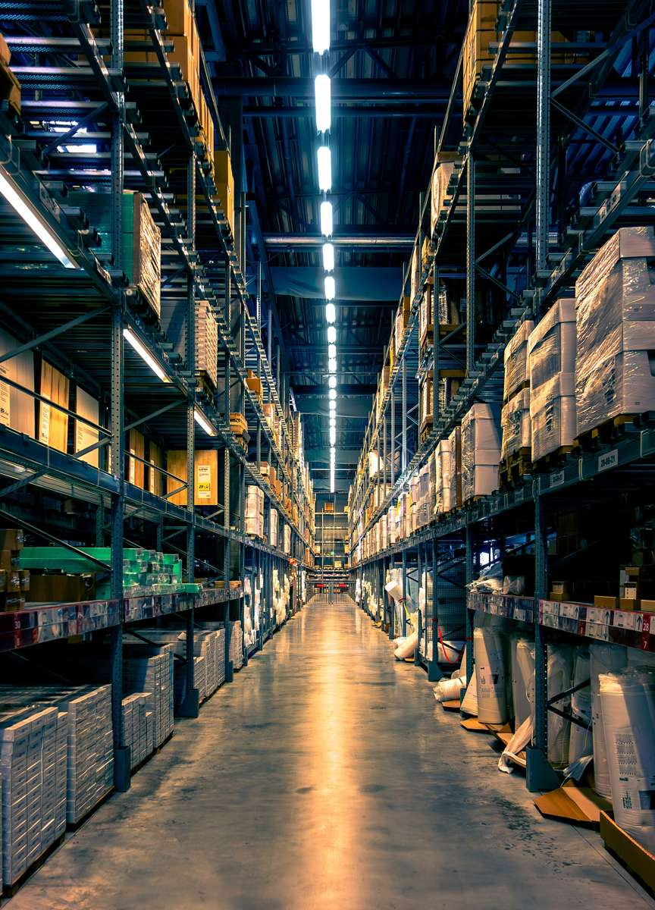
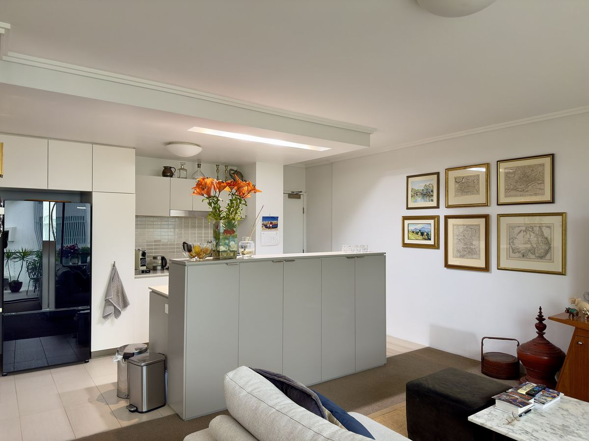

Most rental flats in Dubai come unfurnished. Some do not even include basic appliances like a fridge, cooker or washing machine. For a family arriving with a few suitcases, furnishing a home can be a major cost in the first month. Here is how to approach it sensibly.
What does unfurnished mean?
In Dubai, "unfurnished" usually means an empty flat with built-in wardrobes and sometimes kitchen cabinets. Whether appliances are included varies a lot. Some landlords include a cooker and fridge, others nothing. Always ask, because buying white goods alone can add a big amount to your setup costs. Furnished flats exist, but the rent is usually higher.

The essentials for week one
You do not need everything at once. Focus on:
- Beds and mattresses for everyone.
- A fridge, cooker and washing machine if not included.
- Curtains or blackout blinds, which matter in the UAE sun.
- Basic kitchenware, bedding and towels.
- A dining table or a simple seating area.
- Cleaning supplies.
Sofas, decor, rugs and extras can wait until you know how you use the space.
How much can it cost?
The cost depends entirely on your choices. A home furnished with second-hand items and budget stores costs a fraction of one furnished with new items from premium brands. For a typical two-bedroom flat, totals can range widely, from a modest amount to many times that. Prices vary, so make a list and price it before you move.

Where to buy
- Second-hand marketplaces. Expats leave the UAE all the time, and many sell good furniture cheaply. Online classifieds and community groups are full of bargains.
- Budget furniture stores. Large chains offer affordable flat-pack furniture, and many deliver and assemble for a fee.
- Mid-range and premium stores. Better quality and design, but higher prices.
- Rental furniture. Some companies rent furniture monthly, useful if your plans are short-term.
Hidden extras
- Delivery and assembly fees.
- Curtain fitting and rods.
- Light fixtures, as some flats have bare bulbs.
- Air purifiers or extra fans.
- Water dispenser and bottle deliveries.
- Internet router setup.
Should you ship furniture from home?
Shipping can make sense for valuable or sentimental items, but for most families buying locally is cheaper and easier. Shipping costs include packing, freight, customs and delivery, and you may wait weeks. Estimate the volume first to get realistic quotes.
Budgeting it into the big picture
Furniture is just one part of the first-year bill, alongside rent cheques, deposits, school admission and visas. The free MoveWise UAE calculator includes furniture and setup in your first-year UAE relocation cost, so you can see how your choices affect the total. If you are considering shipping, the moving volume calculator helps estimate the space you need.
Tips to save money
- Ask the landlord to include white goods as part of the deal.
- Buy used items in good condition, especially large furniture.
- Shop during sales periods.
- Furnish in stages over the first few months.
- Check the departing tenant: they may sell items cheaply.
A sensible order of purchases
A practical approach is to buy in three waves. In the first week, get beds, appliances, curtains and kitchen basics so the family can sleep, cook and rest comfortably. In the first month, add a sofa, dining set, desks for children's homework and storage. After that, take your time with rugs, decor, plants and anything that makes the space feel like home. Spreading purchases this way protects your cash during the most expensive weeks of the move, and you will make better choices once you understand how your family actually uses each room.
Final thoughts
An empty flat can feel overwhelming, but it is also a chance to set up a home that suits your family. Start with the basics, spread purchases over time, and remember that prices vary widely between sellers and seasons.